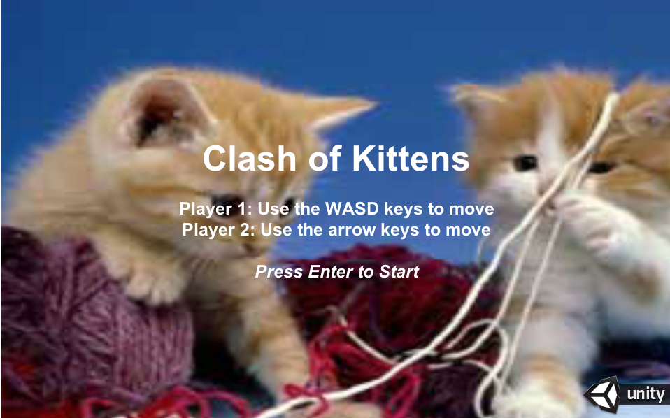
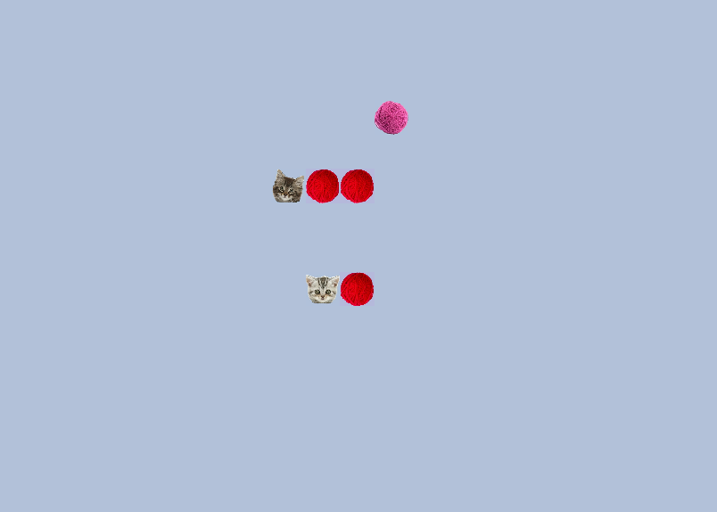
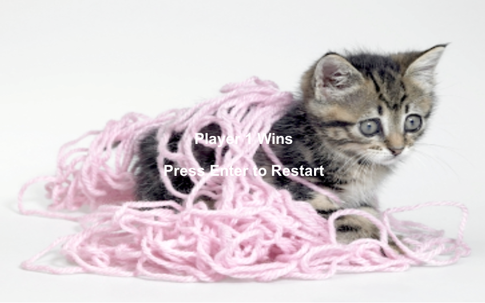
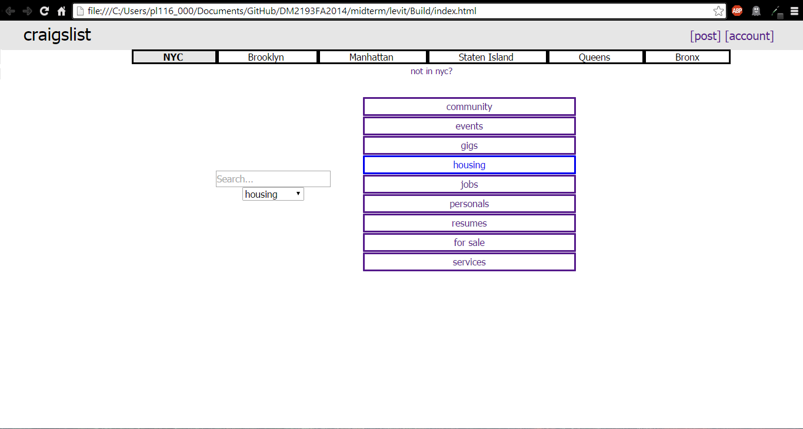
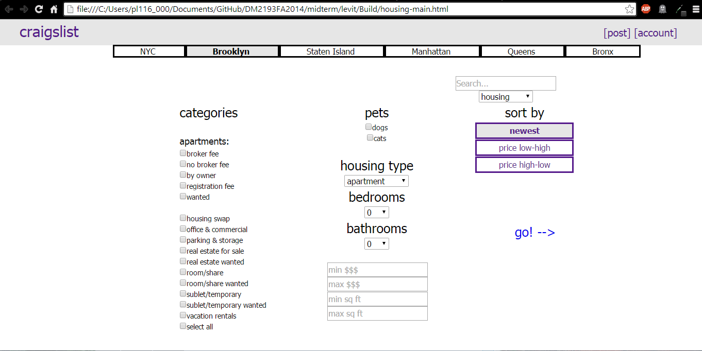
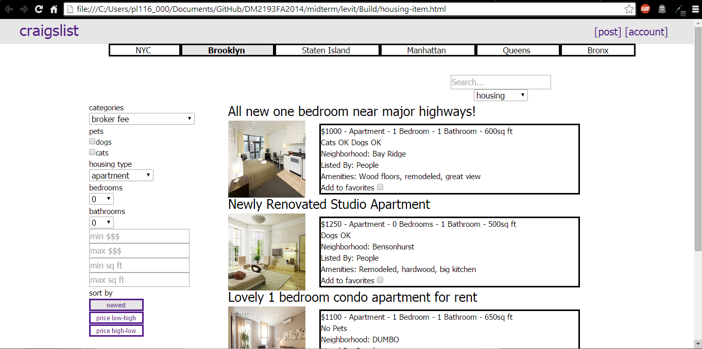

About Me
Hi, I'm Paulina. I am currently working towards my BS in Computer Science with a minor in Digital Media at NYU-Poly. I enjoy biking, long walks on the beach, and creating websites and programs. On this page you'll find a few samples of my work and some information about a small company I recently started - Awesome IT. If you'd like to get in touch with me, I can be found at levit@nyu.edu.
Projects
Wantowski's K-Map Game is a game I used to play in high school involving Karnaugh Maps. This is my second project in Unity, the first I have completed on my own.


K-Maps!
Clash of Kittens is a game similar to snake, except with two players and a much cuter premise. Clash was written in C# and compiled with Unity. It was created in collaboration with Louis Albano, Cassian Whitehurst, and Mark Koutsantanou.



Kittens!
Craigslist is a cluttered, confusing site, so I created a calmer, more user friendly site. All while keeping its ugly craigslist roots. (This is the static build for the main site and housing section. Click housing and then go to see the other pages).



Craigslist!
More projects to come soon!
Awesome IT
Awesome IT was created in October of 2014. Myself and two other founders wanted to bring a fresh face to Managed Service Providers. We created a company that brings a personal touch to the IT business, giving every client all the attention they need and deserve. While I am no longer involved, I was the creator of the website. See it at ait.nyc!